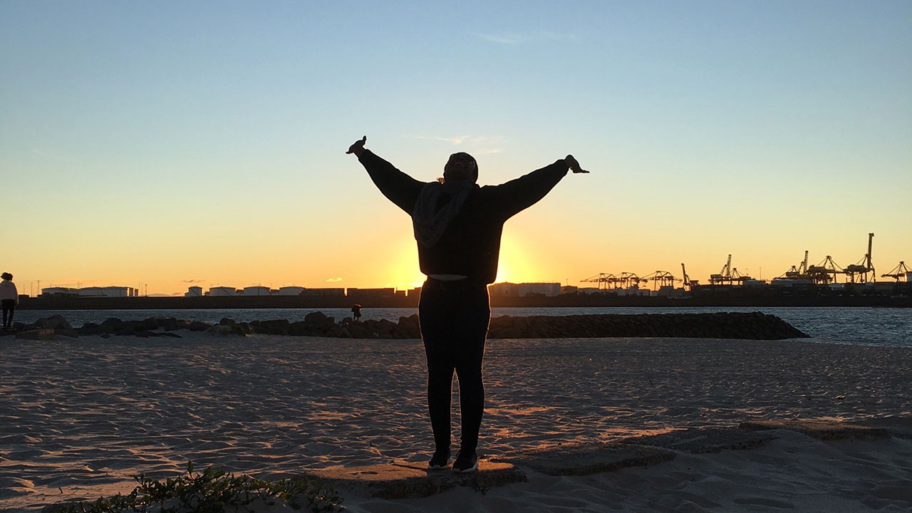

Patricia Howe
Personal Trainer,
Massage Therapist &
Crystal Therapist

Who am I
Patricia Howe
I was born and raised in Berkshire, from a very early age you would find me on a sports field (track or field.) If not there then outside the family home playing football, cricket, tag, or whatever was being played. Wherever there was sporting/physical activity there was Patricia.
In my early 20’s I visited a gym for the 1st time, and from there a wild card journey began. I found myself in the world of Bodybuilding for the next 16 years. Setting personal goals and being presented with surprise challenges, self-exploration and connection. Meeting new people, I loved every minute. In fact, Exeter was the place I qualified for the British finals on a few occasions, and so my previous love for Exeter grew even more.
Finally, I achieved the goal, the goal I had set in my early 20’s, I finally became Ladies heavyweight British Bodybuilding champion (for 2 consecutive years.) That was a bonus. The stage I had admired from afar from the beginning.
Yet another surprise around the corner, after fulfilling my sponsorship, I was offered an amazing opportunity to invest and part own a gym. Excited to be able to offer the gym goers of Exeter a place to train, meet like minded people and like the gym had given me a place to be with one’s self and work on personal development both physically and mentally uninterrupted. A chance to say thank you to all those who had supported me. There was no need for 2nd thoughts. Exeter became my new home. So the next chapter began.
I know this reads like an amazing journey, which of course it was. I am forever the optimist and therefore try to learn, share (when appropriate) from mistakes/negatives, and embrace, share and cherish the positives.
What am I doing now?
Health & Wellness Coach (Personal Trainer/Massage Therapist/ Pre/Post Natal Wellness Coach.)
You’ll find me in one of the beautiful green spaces Exeter has to offer delivering personal training sessions, or in the calm of Exeter Natural Health Centre. I absolutely love what I do. Personal training feeds the busy, explosive creative side of me which I tailor and share with each individual Client to suit their goals, whilst massage feeds the calm, problem solving, nurturing side of me, again which I tailor for each individual client.
My motto is: "Search within yourself"
Qualifications
- Pre/Post Wellness Practitioner
(Burrell Education) - Level 3 Personal Trainer WABBA
(World Amateur Body Building Association) - Complete Bodyworker and Remedial Massage Therapist APNT
(Association of Physical and Natural Therapists) - Crystal Therapist ICGT
(Institute of Crystal and Gem Therapists)
Services
Massage therapy
As a qualified complete body worker and remedial massage therapist, my practice offers a holistic approach, incorporating flexibility and mobilisation techniques within your tailor made treatment.
| Duration | Price* |
|---|---|
| 30 minutes | £35 |
| 45 minutes | £40 |
| 60 minutes | £45 |
| 90 minutes | £65 |
*NHS discount available upon proof of employment
Combination of personal training and massage therapy is a great stress relief package.
Personal training
Offering 1-1 sessions in the great outdoors, or creative sessions in a spacious room at Exeter Natural Health Centre for those of you who would prefer privacy during training sessions.
Your programmes are tailored to your ability and goals. Qualified Pre/Post-natal wellness practitioner.
Reduced price for first session, packages available.
| Duration | Price |
|---|---|
| 1 hour | £40 |
| Example package 5 personal training sessions + 1 massage therapy session | £225 |
Crystal therapy
This is a very gentle non-intrusive holistic therapy; crystals have been of interest to me for a very long time which prompted me to research and eventually train as a crystal therapist.
Combination of massage therapy and crystal therapy can provide a beautiful sense of relaxation.
| Duration | Price |
|---|---|
| First session 45 minutes | £30 |
| Further treatments 30 minutes | £25 |
| Package - 45 minute massage treatment incorporating chakra balancing | £50 |
Contact
 Patricia Howe
Patricia Howe
07930 258747
info@phew4u.co.uk
phewhealth
I aim to reply to your inquiry within 24 hours.
Exeter Natural Health Centre
Queens Walk 83/84
Queens Street
Exeter
EX4 3RP